Hearth — Handoff & Specs
Oct 24, 2026 · Bhavik Jain
Hearth (a working title) is an IPTV player for iPhone, iPad and Mac. It does what iSTB does and adds Netflix-style profiles that a whole household shares through iCloud. It is a concept with mockups and no code yet; this file is the handoff, and the specs sit in the files beside it.
At a glance
Nothing is built yet: what exists is research, seven mockup screens and these specs. Next comes Phase 1, a player for one provider on iPhone and Mac.
| Item | Detail |
|---|---|
| Status | Concept and mockups; no code |
| Platforms | iPhone, iPad and Mac; Apple TV later |
| Sources | Stalker portals (MAC address), Xtream Codes logins, M3U playlists with XMLTV guides |
| What iSTB lacks | Profiles, and a household shared through iCloud with synced favorites and progress |
| Mockups | ui/index.html in this package: five iPhone screens, the landscape player and the Mac window |
| Name | Hearth is a working title |
The other files: Product spec lists every requirement with its phase, Technical spec covers the stores, sync, player and release, and Source protocols is the reference for the three provider types.
Decisions made
The big calls are settled; reopen one only with a reason as strong as the one beside it.
| Decision | Choice | Why |
|---|---|---|
| Where it lives | A separate app and repo, not a ninth Multitrack tracker | VLCKit would break Multitrack's zero-remote-dependency rule, and an App Review rejection here would block Multitrack releases |
| Sources | Stalker portals, Xtream Codes and M3U with XMLTV, all three | iSTB supports the same three; the owner's provider decides which ships first |
| Player | AVPlayer for HLS and MP4, VLCKit for everything else | AVPlayer brings picture in picture, AirPlay and Now Playing for free but refuses raw MPEG-TS, which many IPTV streams are |
| Profiles | Kept by the app on top of one provider login | Providers have no profiles; one login or MAC serves the whole household |
| Household | Core Data with NSPersistentCloudKitContainer, one iCloud share per household | The pattern Multitrack already ships for Finance and Trips; no server to run |
| What syncs | Profiles, favorites, progress, rules and sources | Channel lists, guide and posters stay on each device: too big, and they change daily |
| Logins | In the shared store as encrypted attributes | Every member needs them to play; to be proven across a share in Phase 3 |
| Minimum OS | iOS 18 and macOS 15, built with the iOS 26 SDK, Swift 6 | Matches Multitrack, so its Core code carries over |
| Distribution | TestFlight for the household first; the App Store only after a deliberate guideline 5.2 review | Internal TestFlight builds skip App Review |
Scope
Version 1 is everything iSTB does on iPhone, iPad and Mac, plus profiles and the shared household. Each requirement's phase is in the product spec.
In version 1
- All three source types, several per household
- Live TV with categories, a timeline guide and catch-up
- Movies and series with resume and up next
- A player with picture in picture, AirPlay, audio and subtitle tracks, timeshift and multi-view
- Profiles with a PIN, a Kids mode and a Guest mode
- A household shared through iCloud, with favorites and progress synced per profile
- Warnings before a stream would go over the provider's connection limit
- Downloads of movies and episodes where the provider allows them
- A Mac app with a sidebar and multi-view windows
Later
- An Apple TV app from the same SwiftUI code
- Siri and Shortcuts, Live Activities for a match in progress
- Recording, only if a provider offers it
Never
- Bundled channels, playlists or a directory of providers
- Finding, scanning or sharing portals or logins
- Ads, analytics or tracking
- A server of our own
Roadmap
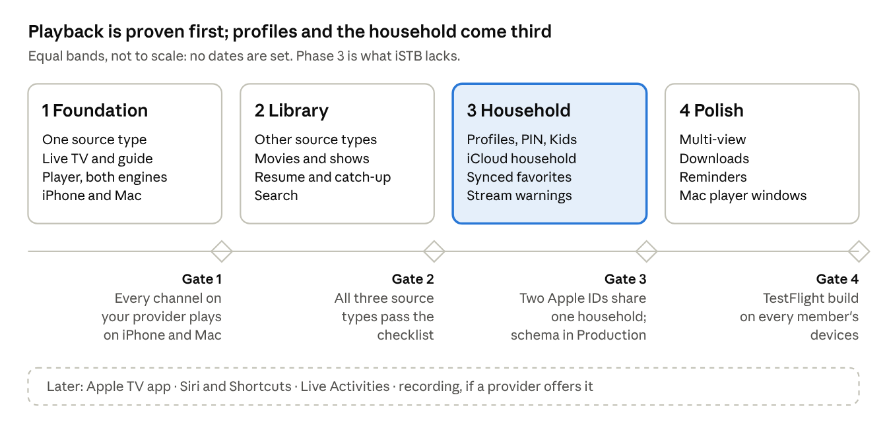
No dates are set: each phase starts when the gate before it passes. Every requirement in the Product spec carries its phase.
Risks
The two that could stop the project are the owner's portal refusing an app that isn't a MAG box, and App Review. Both are checked in the first weeks, before anything else is built on them.
| Risk | What happens | Fallback |
|---|---|---|
| The portal checks a serial number, device ids or a signature | Sign-in fails | Advanced fields for each, filled from the provider; test with the probe in week 1; many providers also issue an Xtream login |
| One stream per MAC | A second member pressing play knocks the first off | Warn before playing; hold several MACs under one portal; buy a second connection |
| App Review rejects under guideline 5.2 | No App Store release | TestFlight for the household; present it as a player that ships no content |
| VLCKit's licence, size and picture in picture | LGPL duties, a larger app, harder PiP | Link it as a dynamic framework with attribution; prefer HLS where the provider offers it |
| Huge catalogs and guides | Slow first load, memory spikes | Parse as a stream, page requests, store in SQLite, import in the background |
| CloudKit sharing traps | Crash at launch or shares that never finish | Follow the Multitrack lessons below; run the schema ritual before each TestFlight build |
| A provider renumbers channels | Favorites and progress point at nothing | Keys built from stable ids with a name fallback (Source protocols, Stable ids) |
| Encrypted logins don't open for share participants | Members can't play | Proven in a Phase 3 spike; fallback is each member typing the login once |
Open questions
The first one decides what Phase 1 builds; the rest can wait until their phase.
- Which login does your provider give you: a MAC portal, an Xtream username and password, or an M3U link?
- How many streams at once does the subscription allow, per login or per MAC?
- Keep the name Hearth?
- App Store, or TestFlight only? Internal TestFlight needs each household member added to your App Store Connect team.
- Who is in the household, and which role does each person get (owner, can manage, can watch)?
- Are downloads wanted, and does the provider allow them?
- Apple TV this year, or after the Mac app ships?
- Copy Multitrack's Core sharing code into the new repo, or extract it into a package both apps use?
Carried over from Multitrack
Multitrack paid for each of these with a crash, a hang or lost data; Hearth uses the same iCloud stack and starts with them. The full record is Multitrack's CLAUDE.md, and its Core package (CloudSharedStore, SharePreparer, CloudSyncMonitor, SharingStatusResolver) is the code to borrow.
- Model rules or a crash at launch. Every non-optional attribute has a default, every relationship is optional with an inverse, nothing is unique, and enums are stored as raw strings with a fallback. Breaking one fails at container load, never at compile time.
- A computed property can't be filtered on. Predicates and sort descriptors touch stored attributes only, or the fetch fails at runtime.
- The schema ritual before every TestFlight build that adds an entity or attribute. Initialise the schema in Development, check it, then Deploy Schema Changes to Production. Production never creates record types itself, including
cloudkit.share, so the run makes and deletes one test share. - Never call the sharing API on the main thread. Multitrack's TestFlight build 16 deadlocked on Share and was killed. Use background forms, one
share()per object, look up before sharing, and bound every wait. - Members leave a share; they never delete its root. A participant's delete asks iCloud to delete the owner's record.
- Don't write what changes every second. Each synced write wakes the partner's devices and can fire their iCloud alerts. Progress is saved on pause, stop and every few minutes; the who's-watching record is written at play, at stop and every ten minutes, never per second.
- Debug is its own app. A
.devbundle id with its own container; sharing the release id once crashed TestFlight three times. - There is no sync now. Re-post did-become-active at most once a minute and wait, bounded, for an import; never remove and re-add stores.
- iOS allows 64 pending local notifications per app. Guide reminders must fit inside that.
- Views stay untested by policy. Logic goes into value types with Swift Testing tests; tests that need a real login are gated so a missing credential shows as a named skip.
First week
The first week proves the two riskiest things against the real provider: signing in, and playing a channel. Nothing else waits on design.
- Get answers to the first two open questions: provider type and stream limit.
- Create the repo with an XcodeGen
project.yml: iOS and Mac targets, a.devDebug bundle id, one iCloud container. - Write the source probe (a Debug launch argument): sign in, list categories, fetch one channel's link, print every step and its timing.
- Save the provider's responses as test fixtures, logins and MACs scrubbed.
- Play one live channel through AVPlayer (HLS) and through VLCKit (MPEG-TS), on iPhone and on Mac.
- Import that provider's whole catalog into the local store and time it.
- Model the household store from the technical spec now, even though its screens come in Phase 3, and initialise it once in Development.
- Set up CI: build both platforms and run the package tests.
Sources
- iSTB on the App Store and iSTB Lite: the product being matched (feature list from its listing, seen through search results)
- App Review Guidelines, section 5.2: third-party content and streaming
- Multitrack's CLAUDE.md: the CloudKit and sharing lessons
- The mockups:
ui/in this package, and the live design canvas at https://claude.ai/artifact/FQKiJK9SuC9Xc2UZ8UFQdi - Protocol sources are listed at the end of Source protocols.
Product spec
What Hearth does, area by area, with every requirement tagged by the phase that delivers it. Requirement ids (SRC-1, PRF-2 …) stay fixed so issues and commits can cite them.
Users and roles
Two layers: members are iCloud accounts in the household share, and profiles are the viewers inside it, so one shared iPad can serve several profiles. Roles are enforced by the app, because every member needs write access in iCloud to save their own favorites and progress.
| Who | What they are | Can |
|---|---|---|
| Owner | The member who created the household | Everything: members, sources, profiles, rules, PIN resets |
| Can manage | A member trusted with setup | Add and edit sources and profiles, change rules; not remove the owner |
| Can watch | Any other member | Pick a profile, watch, edit that profile's favorites and lists; never see logins or change sources |
| Kids profile | A viewer, not an account | Only the categories allowed for kids; an adult's PIN to leave |
| Guest profile | A viewer, not an account | Watch anything not hidden; nothing is saved |
Navigation
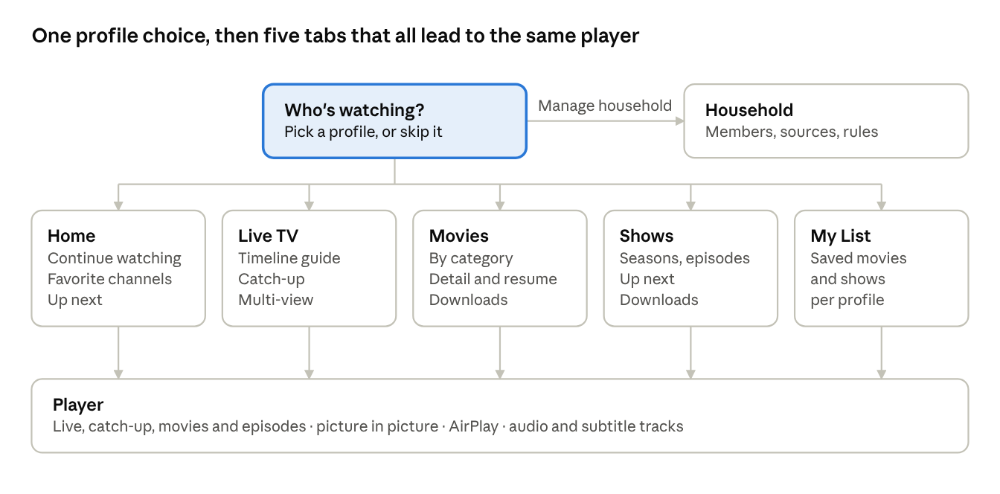
On the Mac the same five places sit in a sidebar under the profile switcher (MAC-1). The mockups in ui/ show Who's watching, Home, the Live TV guide, a show, Household, the player and the Mac window.
Sources
A source is one provider login, added once for the whole household. Stalker is planned for Phase 1; if the owner's provider turns out to be Xtream, swap SRC-1 and SRC-2.
| Id | Requirement | Phase |
|---|---|---|
| SRC-1 | Add a Stalker portal: portal URL and MAC address; advanced fields for serial number, device id, device id 2, signature, box model and time zone | Phase 1 |
| SRC-2 | Add an Xtream login: server URL, username, password; show expiry and the connection limit from the account call | Phase 2 |
| SRC-3 | Add an M3U playlist by URL or file, with an XMLTV guide URL taken from the playlist header or typed in | Phase 2 |
| SRC-4 | Test a source before saving it: sign in, count channels and movies, show the provider's own error text on failure | Phase 1 |
| SRC-5 | Show each source's status: active or expired, expiry date, last refresh, streams allowed | Phase 1 |
| SRC-6 | Refresh on demand and on a schedule: catalog daily, guide every few hours | Phase 1 |
| SRC-7 | Several sources per household; their content appears together, each item labelled with its source | Phase 2 |
| SRC-8 | Only the owner and managers see or edit logins; watchers see a source's name | Phase 3 |
| SRC-9 | Removing a source hides its favorites and progress instead of deleting them, so adding it back restores them | Phase 3 |
| SRC-10 | Several MACs under one portal, each device taking a free one | Phase 4 |
Profiles
Profiles work like Netflix's. Phase 1 ships with one built-in profile so favorites already belong to a profile; the screens to manage them arrive in Phase 3.
| Id | Requirement | Phase |
|---|---|---|
| PRF-1 | Up to 8 profiles per household, each with a name, an avatar (colour plus letter or symbol) and a kind: standard, kids or guest | Phase 3 |
| PRF-2 | "Who's watching?" at launch when there is more than one profile; a device can be set to always open one profile | Phase 3 |
| PRF-3 | An optional 4-digit PIN per profile, asked when switching to it | Phase 3 |
| PRF-4 | Kids: only categories the owner marked for kids, no settings, an adult's PIN to leave | Phase 3 |
| PRF-5 | Guest: no history, favorites or progress kept, cleared on leaving | Phase 3 |
| PRF-6 | Per-profile rules: which sources and categories show, and which are hidden | Phase 3 |
| PRF-7 | Each profile has its own favorites, My List, progress, recent channels and up next | Phase 3 |
| PRF-8 | Switch profile from Home's header on the phone and the sidebar on the Mac | Phase 3 |
| PRF-9 | The last profile used on a device is remembered on that device only, never synced | Phase 3 |
Household sharing
The household is one iCloud share: whoever accepts it gets every profile and source on every device signed in to their Apple ID. The Household screen in the mockups is the reference layout.
| Id | Requirement | Phase |
|---|---|---|
| HH-1 | The first launch creates a household (" |
Phase 3 |
| HH-2 | Invite through the iCloud share sheet (Messages, Mail or a link) and pick a role: can manage or can watch | Phase 3 |
| HH-3 | An accepted invite shows the household's profiles and sources on all of that person's devices | Phase 3 |
| HH-4 | A member can leave and the owner can remove one; leaving clears the household from that member's devices only | Phase 3 |
| HH-5 | Who's watching now: each active stream (person, device, channel, source) visible to the household within about a minute | Phase 3 |
| HH-6 | Before playing on a source at its limit, warn and name who is using it; "Watch anyway" stays possible | Phase 3 |
| HH-7 | Sources and profiles belong to the household; favorites, lists and progress belong to a profile | Phase 3 |
Live TV and guide
Live TV opens on the profile's favorites. The guide is a timeline, and anything already aired on a channel with an archive can be watched from its start.
| Id | Requirement | Phase |
|---|---|---|
| LIV-1 | Channel list by category: number, logo, what's on now and its progress; Favorites first | Phase 1 |
| LIV-2 | Timeline guide: channels down, time across, a now line, two hours on screen, as many days back and ahead as the guide holds | Phase 1 |
| LIV-3 | Tap a programme for its details and Watch live | Phase 1 |
| LIV-4 | Catch-up: aired programmes carry a mark when the channel has an archive; play from the start or any point | Phase 2 |
| LIV-5 | In the player: channel up and down, previous channel, a mini guide over the picture | Phase 1 |
| LIV-6 | Find a channel by name or number | Phase 1 |
| LIV-7 | A missing logo falls back to a monogram tile | Phase 1 |
| LIV-8 | Hide channels and categories per profile | Phase 3 |
| LIV-9 | Remind me: a local notification a few minutes before a programme starts | Phase 4 |
Movies and Shows
Movies and shows come from the providers' on-demand catalogs, merged across sources. Home pulls the most useful of them together for the current profile.
| Id | Requirement | Phase |
|---|---|---|
| HOME-1 | Home: Continue watching, favorite channels with what's on, up next in shows, new movies | Phase 2 |
| VOD-1 | Movies by category, sorted by date added, name or year, as a poster grid | Phase 2 |
| VOD-2 | Movie detail with whatever the provider supplies (poster, year, plot, rating, cast, length), plus Play or Resume, My List and Download | Phase 2 |
| VOD-3 | Resume from the last position per profile; marked watched at 95% | Phase 2 |
| SER-1 | Shows by category; detail with seasons and episodes, each episode's watched mark and progress | Phase 2 |
| SER-2 | Up next: the next unwatched episode of each show in progress, per profile | Phase 2 |
| SER-3 | Show where other profiles in the household are in a show (never a Guest's) | Phase 3 |
| DL-1 | Download a movie or episode to watch offline, when it is a file rather than a live stream; kept on that device only | Phase 4 |
| DL-2 | A download counts against the provider's stream limit while it runs | Phase 4 |
Player
One player screen serves live TV, catch-up, movies and episodes; the engine underneath is chosen per stream (Technical spec). The landscape player in the mockups is the reference.
| Id | Requirement | Phase |
|---|---|---|
| PLY-1 | Play HLS and MP4 with AVPlayer and everything else (raw MPEG-TS, MKV) with VLCKit, chosen automatically | Phase 1 |
| PLY-2 | Controls: play and pause, back and forward 10 seconds, scrubbing, Jump to live | Phase 1 |
| PLY-3 | Picture in picture and AirPlay for streams AVPlayer plays; Now Playing and lock-screen controls; audio keeps playing in the background | Phase 1 |
| PLY-4 | On failure, show the provider's message, retry once with a fresh link, then offer the same channel from another source if one exists | Phase 1 |
| PLY-5 | Pause and rewind live TV within the channel's catch-up window | Phase 2 |
| PLY-6 | Choose audio and subtitle tracks; each profile's preferred languages picked automatically | Phase 2 |
| PLY-7 | Fit, fill and zoom | Phase 2 |
| PLY-8 | Picture in picture for streams VLCKit plays | Phase 4 |
| PLY-9 | Multi-view: two or four streams, one with sound; a slot the stream limits rule out says why | Phase 4 |
| PLY-10 | Sleep timer | Later |
Favorites, My List and search
Favorites and My List belong to a profile and follow it to every device in the household. Search runs on the device against the local catalog, across every source.
| Id | Requirement | Phase |
|---|---|---|
| FAV-1 | Favorite channels, in an order set by hand | Phase 1 |
| FAV-2 | Favorites survive channel renumbering and source refreshes (stable keys, Source protocols) | Phase 1 |
| FAV-3 | My List for movies and shows | Phase 2 |
| FAV-4 | Favorites, My List and progress synced per profile through the household | Phase 3 |
| SRCH-1 | One search across channels, the next 24 hours of the guide, movies and shows, from all sources | Phase 2 |
| SRCH-2 | Results grouped by type; nothing leaves the device | Phase 2 |
| SRCH-3 | A Kids profile's results include only what it may watch | Phase 3 |
Parental controls and privacy
Adult content is hidden everywhere until the owner says otherwise. Nothing leaves the device except calls to the household's own providers and to iCloud.
| Id | Requirement | Phase |
|---|---|---|
| PRIV-1 | No analytics, ads or tracking libraries | Phase 1 |
| PRIV-2 | Logins are never logged, and are scrubbed from probe output and test fixtures | Phase 1 |
| PRIV-3 | Logins stay encrypted in iCloud yet open on every member's devices | Phase 3 |
| PAR-1 | Adult categories hidden on every profile by default, matched by name ("adult", "xxx", "18+") plus any the owner marks | Phase 3 |
| PAR-2 | Kids profiles see only the categories allowed for them | Phase 3 |
| PAR-3 | PINs stored as salted hashes; the owner can reset a forgotten one | Phase 3 |
| PAR-4 | A Guest profile keeps nothing | Phase 3 |
Mac app
The Mac app shows the same household with a sidebar instead of tabs, and uses the bigger screen for multi-view and separate player windows. The Mac window in the mockups is the reference.
| Id | Requirement | Phase |
|---|---|---|
| MAC-1 | A split view: the profile switcher, search, Home, Live TV, Movies, Shows, My List, Downloads, then favorite channels, and the household's stream use at the foot | Phase 1 |
| MAC-2 | Keyboard: space to pause, left and right arrows for 10 seconds, up and down for channels, ⌘F for full screen | Phase 1 |
| MAC-3 | Players in their own windows, several at once, each able to go full screen | Phase 4 |
| MAC-4 | Settings as its own window (⌘,) | Phase 1 |
| MAC-5 | Multi-view in Live TV's toolbar, with a channel dragged from the sidebar onto a tile | Phase 4 |
| MAC-6 | iPad uses the Mac's sidebar layout when the window is wide enough | Phase 2 |
Quality bar
These are targets to confirm against the owner's real provider in Phase 1, not measurements. A miss is a bug to fix or a target to change on purpose.
| Area | Target |
|---|---|
| Starting a live channel | Picture within 2 s on home Wi-Fi for HLS, 3 s for MPEG-TS |
| Switching channel | Under 2 s from press to picture |
| Guide | Scrolls without dropped frames with 1,000 channels loaded |
| First import | 50,000 movies and series stored in under 2 minutes, in the background, with the app usable throughout |
| Opening the app | Last-used screen from the local catalog in under 1 s, with no network |
| Offline | The app opens, downloads play, and a provider it can't reach says so plainly |
| Accessibility | VoiceOver labels on every control, Dynamic Type, 44 pt touch targets, captions follow system settings, Reduce Motion respected |
| Languages | English first; every string localisable from day one |
Technical spec
Hearth is a separate SwiftUI app for iOS 18 and macOS 15, built with the iOS 26 SDK. It keeps two stores, a household shared through iCloud and a catalog cached on each device, and its player picks AVPlayer or VLCKit for each stream.
Architecture
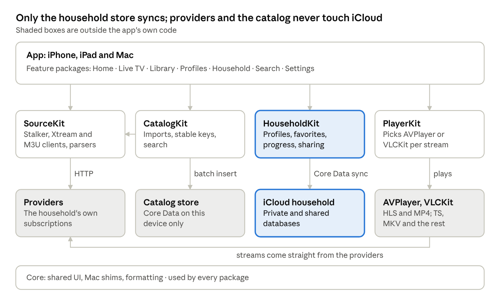
CatalogKit pulls through SourceKit and writes the local store; only HouseholdKit talks to iCloud. The player takes its stream URLs from the catalog and plays them straight from the provider.
Packages and targets
The repo copies Multitrack's layout: an XcodeGen project.yml, an App/ composition root with iOS and Mac targets, and local Swift packages. VLCKit is the only remote dependency, and only PlayerKit imports it.
| Package | Owns | Depends on |
|---|---|---|
| Core | Shared UI chrome, the Mac shims, formatting, counted(_:_:plural:) |
Nothing |
| SourceKit | The Stalker and Xtream clients, the M3U and XMLTV parsers, one SourceClient protocol over all three |
Nothing |
| CatalogKit | The per-device catalog store, imports from SourceKit, stable keys, search | Core, SourceKit |
| HouseholdKit | The synced household store, sharing, roles, the who's-watching records | Core |
| PlayerKit | The engine protocol, the AVPlayer and VLCKit engines, engine choice, picture in picture, Now Playing, multi-view | Core, VLCKit |
| Feature packages | Home, Live TV, Library (movies and shows), Profiles, Household, Search, Settings | Core plus the kits they need; never each other |
- Targets: Hearth (iOS and iPadOS), Hearth-macOS, a test target per package, and an
AllPackageTestsscheme that CI runs. - Bundle ids: a release id and a
.devDebug id, each with its own sandbox; both use one iCloud container, Debug against Development only. - Rule: SourceKit and CatalogKit never touch iCloud; HouseholdKit never talks to a provider; features join them.
Household store
A hand-built Core Data model, HouseholdModel, in an NSPersistentCloudKitContainer with a private and a shared store, the way Multitrack's Finance is built. Household is the share root; everything else hangs off it. Every non-optional attribute has a default, every relationship is optional with an inverse, nothing is unique, and enums are stored as …Raw strings.
| Entity | Attributes | Notes |
|---|---|---|
| Household | id, name, createdAt, adultCategoryKeys (JSON) | Share root; to-many sources, profiles, memberRoles, playbacks |
| Source | id, name, kindRaw (stalker, xtream, m3u), serverURL, sortOrder, isRemoved, maxStreams, expiresAt; encrypted: macAddress, username, password, playlistURL, guideURL, serialNumber, deviceID, deviceID2, signature, model, timeZone | Encrypted attributes use Allows Cloud Encryption, set before the first Production deploy because it can't be added later |
| Profile | id, name, kindRaw (standard, kids, guest), avatarColorRaw, avatarSymbol, sortOrder, pinHash, pinSalt, allowedCategoryKeys (JSON), hiddenCategoryKeys (JSON), audioLanguage, subtitleLanguage | Guest profiles never write favorites or progress |
| Favorite | id, itemKey, kindRaw (channel, movie, series), sortOrder (Double), addedAt | Belongs to a profile; covers favorite channels and My List; duplicates folded by profile plus itemKey |
| Progress | id, itemKey, kindRaw (movie, episode, catchup), position, duration, watched, updatedAt, seriesKey, season, episode | One row per profile and item, updated in place; the later updatedAt wins a conflict |
| Playback | id, deviceName, profileID, sourceID, itemKey, title, startedAt, lastSeenAt | Who's watching now; deleted at stop, ignored after 15 minutes without a heartbeat |
| MemberRole | participantID, roleRaw (owner, manage, watch) | Written only by the owner; the app hides controls by role |
Item keys are built by CatalogKit from stable provider ids, so a refresh or a renumbered channel doesn't orphan a favorite (Source protocols, Stable ids).
Catalog store
A local Core Data store on each device, never synced and safe to delete: everything in it can be fetched again from the providers. Imports use NSBatchInsertRequest into a new generation number, swap when complete, then delete the old generation, so a failed refresh leaves the last good catalog in place.
| Entity | Attributes | Notes |
|---|---|---|
| Category | sourceID, remoteID, kindRaw (live, vod, series), name, sortOrder, isAdult | isAdult matched by name, plus the household's own list |
| Channel | sourceID, remoteID, stableKey, number, name, searchKey, logoURL, categoryID, guideChannelID, hasArchive, archiveDays, command, formatHint | command is Stalker's cmd or an Xtream or M3U URL |
| Programme | sourceID, guideChannelID, start, end, title, summary, category, hasArchive | Indexed on guideChannelID and start; kept from 7 days back to 7 ahead |
| Movie | sourceID, remoteID, stableKey, name, searchKey, categoryID, posterURL, year, plot, rating, duration, containerExtension, addedAt | |
| Series | sourceID, remoteID, stableKey, name, searchKey, categoryID, posterURL, plot, year | |
| Episode | sourceID, seriesID, remoteID, stableKey, season, number, title, duration, containerExtension, command | Fetched when a series is opened, then cached |
| SourceState | sourceID, generation, catalogRefreshedAt, guideRefreshedAt, accountExpiry, streamLimit, activeStreams, activeStreamsReadAt | Stalker's session token stays in memory and this device's Keychain, never here |
| Download | itemKey, profileID, fileName, bytes, state, finishedAt | Files in Application Support; one device only |
- Search matches a
searchKey(lowercased, accents and punctuation stripped). If 50,000 movies can't be searched as you type, move to an SQLite FTS table; check in Phase 2. - Images go through
URLCachewith a disk limit, never into either store.
Sync and sharing rules
Only the household store syncs, and it is written as rarely as the features allow: each write wakes every household device. The share is created through a SharePreparer-style plan, never by a bare share() call on the main thread.
| Record | Written when | Conflict rule |
|---|---|---|
| Source, Profile, MemberRole | On save in their editors | Last save wins per attribute |
| Favorite | On add, remove or reorder | Duplicates folded on import by profile plus itemKey, keeping the earliest addedAt |
| Progress | On pause, stop, finish, going to the background, and every 5 minutes of playback | The later updatedAt wins, whole row |
| Playback | At play, at stop, and every 10 minutes while playing | Any device deletes rows unseen for 15 minutes |
- Sharing: the owner's first invite shares the
Householdroot. Participants join with read and write access, because they save their own favorites and progress; role limits are the app's, not iCloud's. - Leaving: a participant leaves by purging the share's zone from the shared store, never by deleting the root.
- Logins: encrypted attributes only; never in UserDefaults, logs or crash reports. A Phase 3 spike proves a participant can read them.
- Pushes:
aps-environmentand the remote-notification background mode on, so a partner's favorite lands in seconds rather than at the next launch. - No iCloud alert subscriptions in version 1: nothing needs to reach a device that is off.
- Refresh from iCloud: Multitrack's CloudSyncMonitor approach, at most once a minute, with a bounded wait.
Player engine
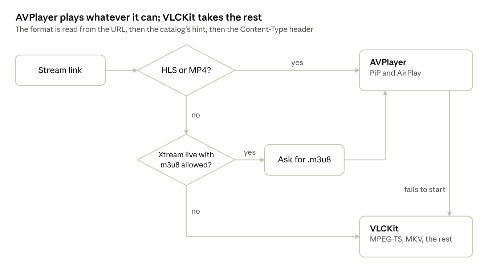
One PlaybackEngine protocol (load, play, pause, seek, tracks, state) hides which engine runs, so the player screen and multi-view never ask. An AVPlayer stream that hasn't started within a few seconds, or fails, is retried once on VLCKit with a fresh link.
| AVPlayer | VLCKit | |
|---|---|---|
| Formats | HLS, MP4, MOV | MPEG-TS, MKV and most others, HLS too |
| Picture in picture | Built in | Phase 4 (PLY-8), through a sample-buffer layer |
| AirPlay video | Built in | Screen mirroring only |
| Now Playing, lock screen | Set by the app | Set by the app |
| Audio and subtitle tracks | Media selection groups | VLCKit's track lists |
| Mac | Yes | Yes |
Stream limits
The provider's own count wins wherever it gives one; the household's Playback records only say who is using the streams. Xtream reports a count, Stalker and M3U don't.
| Source | Limit from | In use from |
|---|---|---|
| Xtream | max_connections in the account call |
active_cons in the same call, read when Live TV opens and before each play |
| Stalker | The owner's setting, 1 per MAC by default | Playback records on that source |
| M3U | The owner's setting, unlimited by default | Playback records on that source |
- Before playing, free = limit minus streams in use, not counting this device's own stream.
- Free above zero: play.
- Free at zero: a sheet names who is watching what, with Watch anyway, Use another source (when the same channel exists elsewhere) and Cancel.
- Multi-view takes one stream per tile; a tile that can't get one says which source is full.
- A running download takes a stream until it finishes or pauses.
Catalog refresh and the guide
Catalogs refresh daily and guides every 6 hours, one source at a time, in the background and cancellable. The exact calls per source are in Source protocols.
| What | When | How |
|---|---|---|
| Account (expiry, streams) | On adding a source, when Live TV opens, before each play on Xtream | One call |
| Channels and categories | On adding a source, then when the app opens if older than 24 h | Stalker get_genres + get_all_channels; Xtream live categories and streams; the M3U file |
| Movies and series lists | Same as channels | Stalker paged get_ordered_list (pages count from 0); Xtream VOD and series calls |
| Episodes | When a series is opened | Stalker series list by movie_id and season_id; Xtream get_series_info |
| Guide | Every 6 hours, and in an iOS background refresh when the system allows | XMLTV where offered (Xtream xmltv.php, the playlist's guide URL), read as a stream; Stalker's short guide for the channels on screen |
- Big files: M3U files are read line by line and XMLTV with a streaming
XMLParser; gzip goes through the system zlib, never a remote package. - Background task: register the iOS refresh task in the app's init with its identifier in
BGTaskSchedulerPermittedIdentifiers, and keep its callbacks@Sendable; Multitrack's TV refresh hit both traps. - Time zones: XMLTV times carry their offset; Stalker guide times are read in the portal's
timezone; a test pins each case.
Testing
Swift Testing only, as in Multitrack: logic lives in value types and is tested, views are not. No test touches iCloud or a real provider unless it is gated on a credential and skips by name without one.
| Package | What the tests pin |
|---|---|
| SourceKit | Parsing of saved responses per source type: sign-in, js as an array or as data, 0-based pages, the link inside create_link's cmd, base64 guide titles, M3U attributes, XMLTV times. Network faked with a URLProtocol stub |
| CatalogKit | Imports of fixture catalogs into an in-memory store, generation swap, stable keys, search normalisation |
| HouseholdKit | In-memory Core Data: progress conflict rule, favorite folding, role checks, stale Playback cleanup |
| PlayerKit | The engine choice table: URL, extension and content type to engine |
Debug launch arguments, all #if DEBUG:
-SourceProbe <source name>: sign in to a real provider, list categories, fetch one link, print each step with timings, logins masked.-StubProvider YES: a fake provider behindURLProtocol, so a simulator shows channels, a guide and movies with no login.-InMemoryStores YES: both stores in memory, no iCloud.-InitializeCloudKitSchema YES: the schema ritual run, as in Multitrack.
CI: a GitHub Actions macOS runner builds both platforms and runs AllPackageTests on a simulator. It holds no provider credentials.
Build, release and App Review
The household gets builds through internal TestFlight, which skips App Review; an App Store release waits for a deliberate answer to guideline 5.2. The build and signing setup copies Multitrack's.
- Project: XcodeGen; the generated
.xcodeprojis gitignored; signing, entitlements and Info.plist keys live inproject.yml. - Build number: the CI run number plus an offset, passed on the archive command line, as in Multitrack.
- Entitlements: CloudKit with one container, push (
aps-environment), background modes for audio, fetch and remote notifications; on the Mac, the sandbox plus outgoing network. - Plain-HTTP providers: many portals and playlists are
http://, and their addresses are typed by the user, so App Transport Security needsNSAllowsArbitraryLoads. App Review asks for a reason; the reason is user-supplied servers. - VLCKit: pinned to an exact version and linked as a dynamic framework. It is LGPL (check the version pinned): the licence and a source offer go in Settings, Acknowledgements.
- TestFlight: internal testers must be users on the App Store Connect team, up to 100; external testers go through Beta App Review.
Guideline 5.2, as Apple words it:
- 5.2.2: "If your app uses, accesses, monetizes access to, or displays content from a third-party service, ensure that you are specifically permitted to do so under the service's terms of use. Authorization must be provided upon request."
- 5.2.3: "Apps should not facilitate illegal file sharing or include the ability to save, convert, or download media from third-party sources … without explicit authorization from those sources. Streaming of audio/video content may also violate Terms of Use, so be sure to check before your app accesses those services."
For a public release: ship no channels, playlists or provider lists; give reviewers a demo playlist of streams that are free to use, such as Apple's own HLS samples; say in the review notes that the app only plays services the user already subscribes to. Downloads (DL-1) are the feature 5.2.3 names most directly, so they are the first thing to drop if review objects.
Source protocols
Reference for the three kinds of provider login. None has an official public spec: the Stalker and Xtream details here come from open-source clients and community docs, so every call must be checked against a real provider before it ships.
Compared
Stalker is the hardest of the three: it keeps a session, asks the portal for every stream link, and reports no stream count. Xtream is plain HTTP calls; M3U is one text file.
| Stalker portal | Xtream Codes | M3U with XMLTV | |
|---|---|---|---|
| Login | Portal URL and MAC; sometimes serial, device ids, signature, username and password | Server URL, username, password | Playlist URL or file, optional guide URL |
| Catalog | API calls returning JSON; movies and series paged | API calls returning JSON | Read from the file |
| Stream link | Asked of the portal at each play, short-lived | Built from a URL pattern | Written in the file |
| Guide | Short guide per channel | xmltv.php, or a short guide per stream |
An XMLTV file |
| Catch-up | Archive flag per channel | tv_archive and tv_archive_duration per channel |
catchup attributes |
| Streams allowed | Not reported | max_connections and active_cons |
Not reported |
| Session | Token plus a keep-alive call | None | None |
| Spec | None public; known from open-source clients | None public; community docs | M3U by convention; XMLTV documented |
Stalker portal
A Stalker client behaves like a MAG set-top box: fixed headers and cookies, a token from a handshake, then GET calls named by type and action that answer JSON wrapped in js. Rows marked verified were read in the source of stalkerhek, an open-source client; rows marked unverified are from memory and must be checked with the probe.
Where to send calls. The user types a portal URL, often ending /c/. The API answers at <host>/portal.php, <host>/load.php or <host>/stalker_portal/server/portal.php (or load.php); try each until the handshake returns JSON. Every call adds JsHttpRequest=1-xml.
| Header | Value |
|---|---|
| User-Agent | Mozilla/5.0 (QtEmbedded; U; Linux; C) AppleWebKit/533.3 (KHTML, like Gecko) followed by a MAG200 stbapp identifier (stalkerhek sends ver 4, rev 2116) |
| X-User-Agent | Model: <model>; Link: Ethernet, model MAG254 by default |
| Cookie | sn=<serial>; mac=<MAC>; stb_lang=en; timezone=<time zone> |
| Referer, Origin | The portal's scheme and host |
| Authorization | Bearer <token> on every call after the handshake |
| Step | Request | Read from the answer | Status |
|---|---|---|---|
| Handshake | type=stb&action=handshake&token= |
js.token |
Verified |
| Profile | type=stb&action=get_profile&hd=1&sn=…&stb_type=<model>&device_id=…&device_id2=…&auth_second_step=1 |
Signed in when js.id is set |
Verified |
| Login, where required | POST form type=stb&action=do_auth&login=…&password=…&device_id=…&device_id2=… |
js is true |
Verified |
| Categories | type=itv&action=get_genres |
js[]: id, title |
Verified |
| Channels | type=itv&action=get_all_channels |
js.data[]: name, cmd, logo, tv_genre_id, cmds[0].id and ch_id |
Verified |
| Live link | type=itv&action=create_link&cmd=<cmd> |
js.cmd; the URL is its last space-separated word, which drops an ffmpeg prefix |
Verified |
| Short guide | type=itv&action=get_short_epg&ch_id=<id>&size=<n>, or action=get_epg_info&ch_id=<id> |
An array in js, js.epg or js.data; title as name or title, times as start or start_timestamp and end or stop_timestamp, descr |
Verified |
| Movie and series categories | type=vod or type=series, action=get_categories |
id, title, alias | Verified |
| Movie and series lists | action=get_ordered_list&category=<id>&p=<page>; series add movie_id, season_id, episode_id |
js.total_items and js.data[] (some portals send a bare array): id, name, cmd, screenshot_uri, is_series, is_season, series_number, container_extension |
Verified |
| Movie link | type=vod&action=create_link&cmd=<cmd>, plus series=<n> for an episode |
js.url, else a URL in js.cmd, else build play/movie.php from js.id and js.play_token |
Verified |
| Keep-alive | type=watchdog&action=get_events&event_active_id=0&init=0&cur_play_type=1 |
Nothing needed; stalkerhek repeats it every 5 minutes by default | Verified |
| Account expiry | type=account_info&action=get_main_info |
An expiry field | Unverified |
| Catch-up link | type=tv_archive&action=create_link with the programme |
A link like a live one | Unverified |
Quirks to build in
- A movie
cmdwith no leading/orffmpegis wrapped as/media/file_<cmd>.mpgbeforecreate_link, as stalkerhek does. - Links expire: never store one; ask for a fresh link at every play and retry.
- Field names drift between portals, especially guide times: read every known spelling.
- Guide times without an offset are in the portal's
timezone. - On an auth error, handshake again once before failing; stalkerhek doesn't, and its sessions stop after the token lapses.
- Advanced-field defaults seen in stalkerhek: MAC like
00:1A:79:AA:BB:CC, serial0000000000000, device ids and signature 64fcharacters.
Xtream Codes
Plain HTTP calls with the username and password on each one, no session. Most of this is from a community thread and a sample server script, not an official spec; providers differ in what they support.
Account. GET /player_api.php?username=U&password=P with no action returns user_info (username, password, auth, status, exp_date, is_trial, active_cons, created_at, max_connections, allowed_output_formats) and server_info (url, port, server_protocol, timezone).
Action on player_api.php |
Parameters | Returns |
|---|---|---|
get_live_categories |
Live categories | |
get_live_streams |
category_id, optional |
Live channels, with tv_archive and tv_archive_duration for catch-up |
get_vod_categories |
Movie categories | |
get_vod_streams |
category_id, optional |
Movies |
get_vod_info |
vod_id |
One movie's details |
get_series_categories |
Series categories | |
get_series |
category_id, optional |
Series |
get_series_info |
series_id (not series) |
Seasons and episodes |
get_short_epg |
stream_id, limit (4 by default; some providers ignore it) |
The next few programmes |
get_simple_data_table |
stream_id |
The full guide for one stream |
The whole guide for every stream comes from xmltv.php?username=U&password=P, which not every provider offers.
| Stream | URL | Confidence |
|---|---|---|
| Live | /live/U/P/<stream_id>.ts, or .m3u8 when allowed_output_formats lists it |
Confirmed in the thread; ask for .m3u8 so AVPlayer can play it |
| Movie | /movie/U/P/<stream_id>.<container_extension> |
Common convention; the thread shows it failing for one user. Check with the probe |
| Episode | /series/U/P/<episode_id>.<container_extension> |
Common convention. Check with the probe |
| Catch-up | /timeshift/U/P/<minutes>/<YYYY-MM-DD:HH-MM>/<stream_id>.ts |
Common convention, unconfirmed; the thread only says timeshift parameters are appended |
Quirks to build in
- Guide titles and descriptions may arrive base64-encoded; decode when the text decodes cleanly.
- Numbers and dates often arrive as strings (
exp_dateis a Unix time in a string). - An empty object may arrive as
[].
M3U playlists and XMLTV guides
An M3U playlist is a text file with an #EXTINF line of attributes before each stream URL; the guide is a separate XMLTV file matched by tvg-id. The attribute names follow Kodi's IPTV Simple, which most players copy.
#EXTM3U x-tvg-url="https://example.com/guide.xml.gz"
#EXTINF:-1 tvg-id="cityline.news" tvg-name="Cityline News" tvg-logo="https://example.com/cn.png" tvg-chno="101" group-title="News" catchup="default" catchup-days="7" catchup-source="https://example.com/archive/cn?start={utc}&duration={duration}",Cityline News
https://example.com/live/cn.m3u8
| Attribute | Meaning |
|---|---|
x-tvg-url on #EXTM3U |
The guide's URL; many playlists write url-tvg instead, so read both |
tvg-id |
The channel's id in the XMLTV guide |
tvg-name, tvg-logo, tvg-chno |
Name, logo, channel number |
group-title |
The category |
catchup |
How to build an archive URL: default (use catchup-source as the full URL), append (add catchup-source to the channel URL), plus Shift, Flussonic and Xtream codes styles |
catchup-days |
How far back the archive goes |
catchup-source |
The archive URL or suffix, with placeholders such as {utc} (programme start), {lutc} (now), {duration}, {Y} {m} {d} {H} {M} {S}, {utcend} |
#EXTVLCOPT lines |
key=value options for the stream that follows, such as a user agent or referrer to send |
<tv>
<channel id="cityline.news"><display-name>Cityline News</display-name><icon src="https://example.com/cn.png"/></channel>
<programme start="20261024200000 +0000" stop="20261024210000 +0000" channel="cityline.news"><title>Evening Bulletin</title><desc>Tonight's news.</desc></programme>
</tv>
- XMLTV times are
YYYYMMDDhhmmssplus an offset; files are often gzipped and can run to hundreds of megabytes, so parse as a stream. - A channel with no
tvg-id, or one the guide doesn't know, is matched by normalised name, and the match is shown so the owner can correct it.
Stable ids
Favorites and progress are synced by item key, so a key must outlive a refresh, a renumbering and a new stream token. Every key starts with the source's UUID; stream URLs never go into a key, because many carry a token that changes.
| Source | Channel | Movie | Episode |
|---|---|---|---|
| Stalker | Channel id |
Movie id |
Series id + season + episode number |
| Xtream | stream_id |
stream_id |
series_id + season + episode number |
| M3U | tvg-id, else a hash of the normalised name and group-title |
Same as a channel | Series name + season + episode, parsed from the title |
- After each refresh, look up every favorite and progress key in the new catalog.
- A key that is gone: search the same source for one item with the same normalised name and kind.
- Exactly one match: rewrite the key once (one synced write) and keep going.
- None or several: keep the row, show the item as unavailable, and look again next refresh.
- Episodes are keyed by season and number, never by the episode's own id, which some providers reissue.
Verification checklist
Run the probe against each real provider before its source type ships, and save each answer as a scrubbed fixture. A failed line is a bug in this file first, then in the code.
- Stalker: which API path answers the handshake
- Stalker: does the portal sign in with the MAC alone, or need serial, device ids, signature, or
do_auth - Stalker: how many streams one MAC allows (play on two devices at once)
- Stalker: the format
create_linkreturns for live, movie and episode, and how long a link lasts - Stalker: the account expiry call, and the catch-up link call
- Stalker: how long the token lives without the keep-alive
- Xtream: the account call's
max_connections,active_consandallowed_output_formats - Xtream: movie, episode and catch-up URL shapes play
- Xtream: whether
xmltv.phpanswers, and whether short guide titles are base64 - M3U: the guide header name, catch-up attributes, any
#EXTVLCOPTheaders the streams need - All: the stream format of each kind of item (HLS, MPEG-TS, MP4, MKV), which picks the player engine
- All: catalog size and the time a full import takes
Sources
- stalkerhek source:
stalker/authentication.go,channels.go,epg.go,vod.goandstalker.goread for the verified Stalker rows - stalkerhek on pkg.go.dev: API paths and advanced-field defaults
- StalkerWeb: confirms handshake, token auth and a keep-alive watchdog
- Xtream API thread in Fermata's discussions: Xtream actions, account fields, live URL shape
- Kodi IPTV Simple: M3U attributes, catch-up modes and placeholders
- Apple Developer Forums: AVPlayer and MPEG-TS and VLCKit issue 119: why raw MPEG-TS needs VLCKit
UI mockups
The seven screens from the design canvas. The same screens open as clickable pages from ui/index.html; names, channels and titles are placeholders.
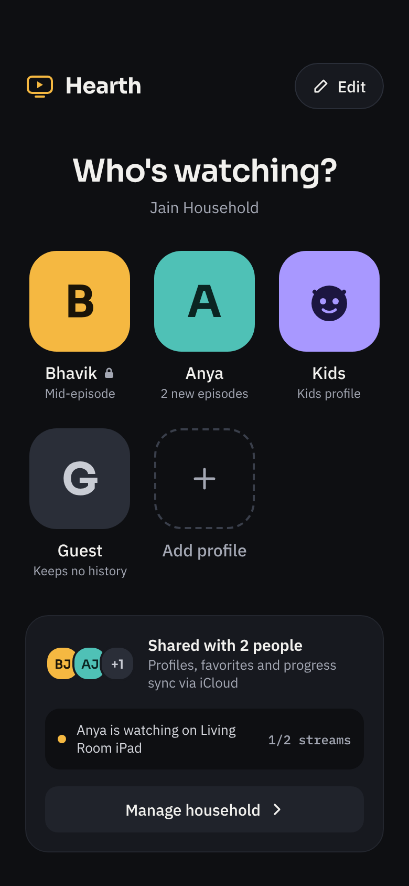
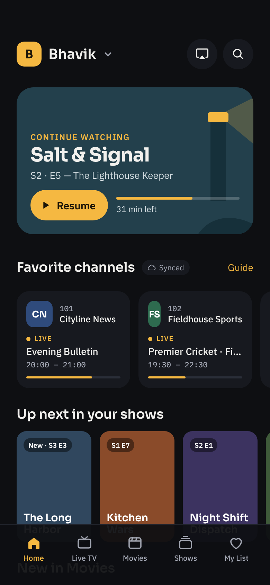
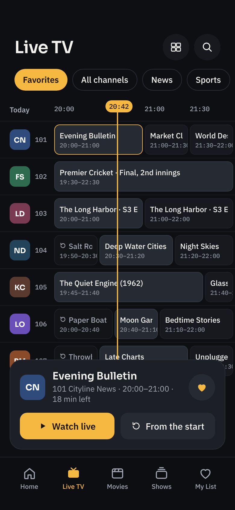
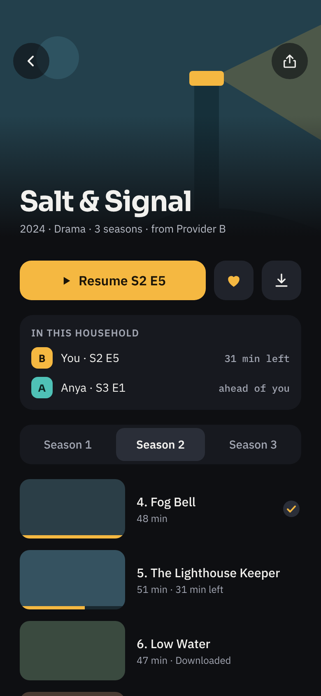
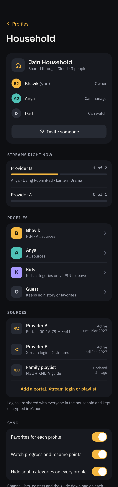
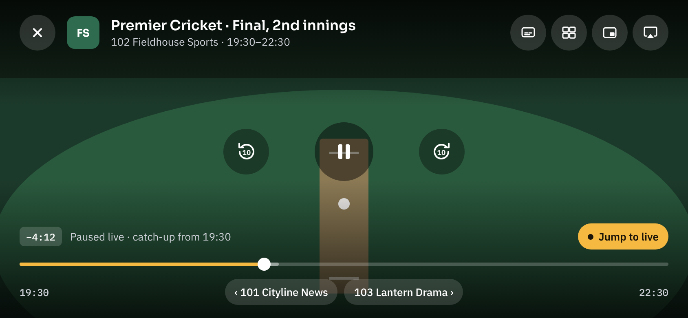
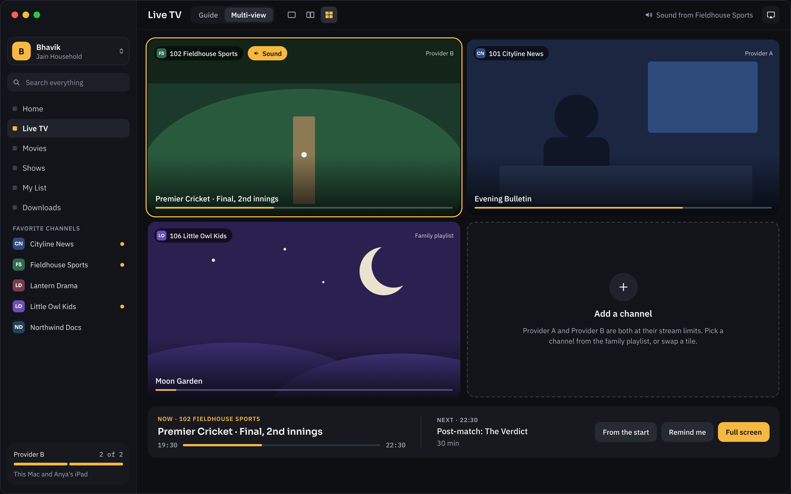